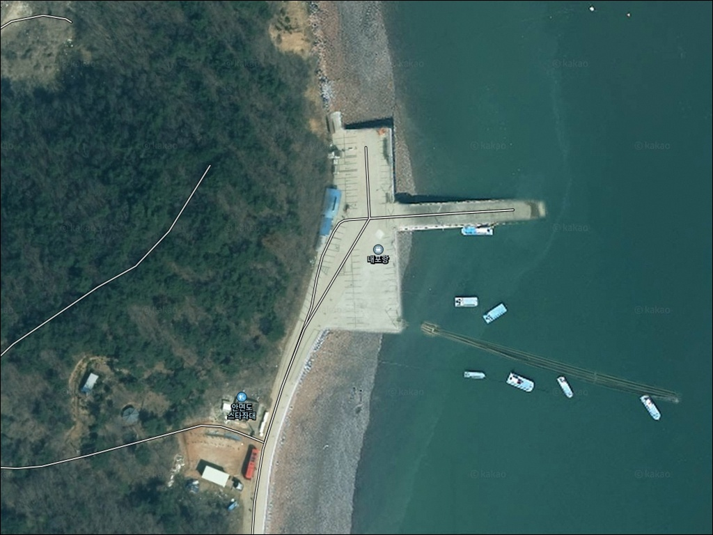
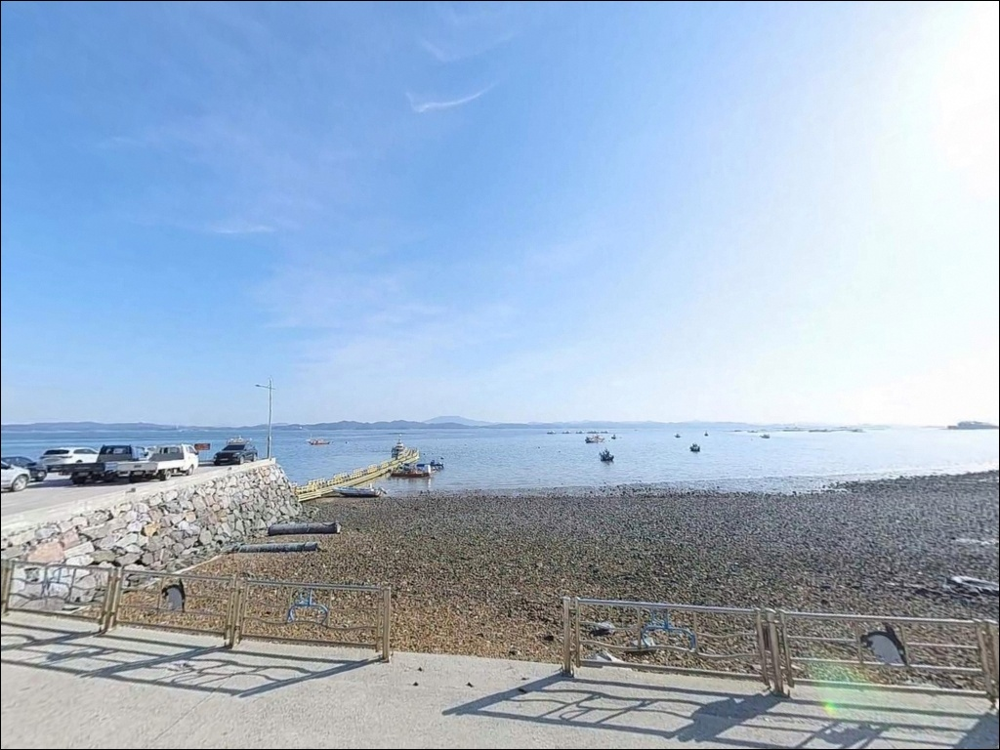
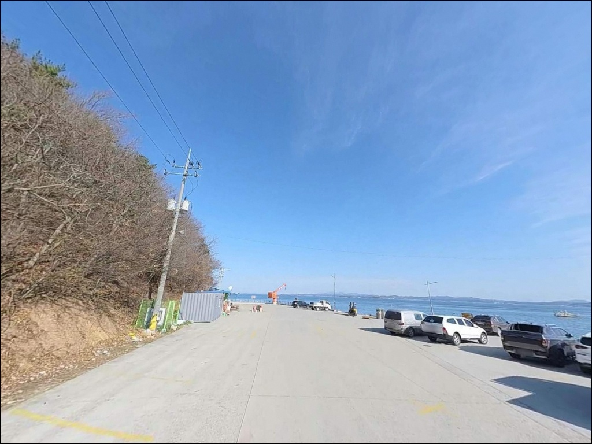
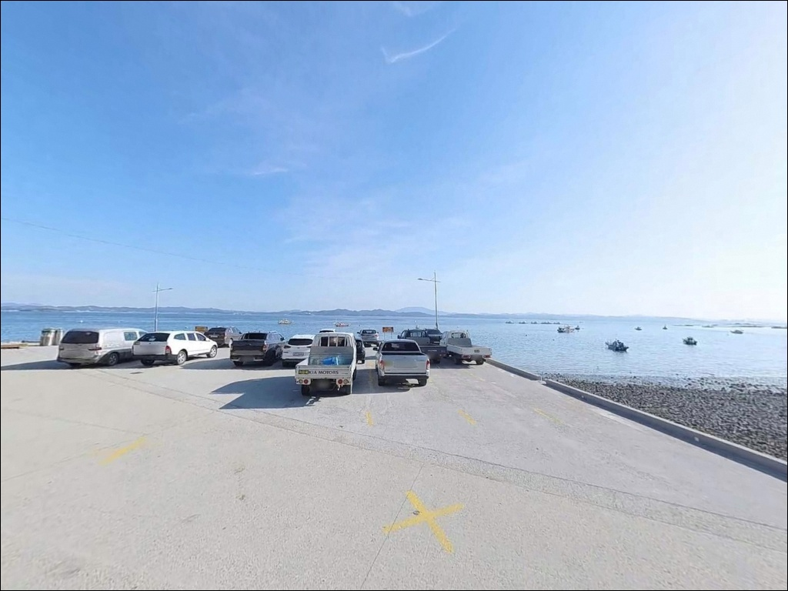
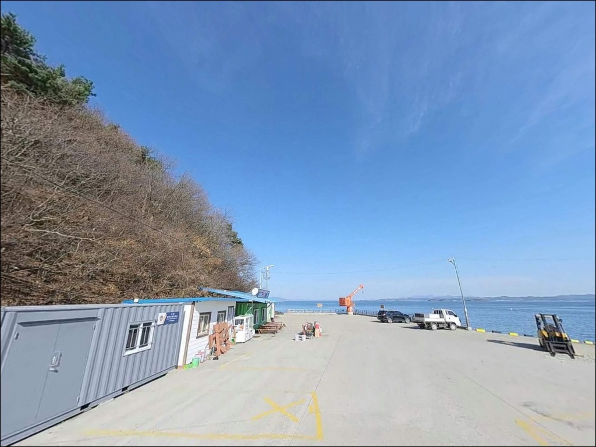
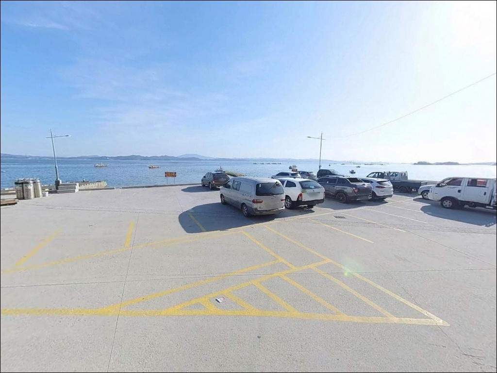
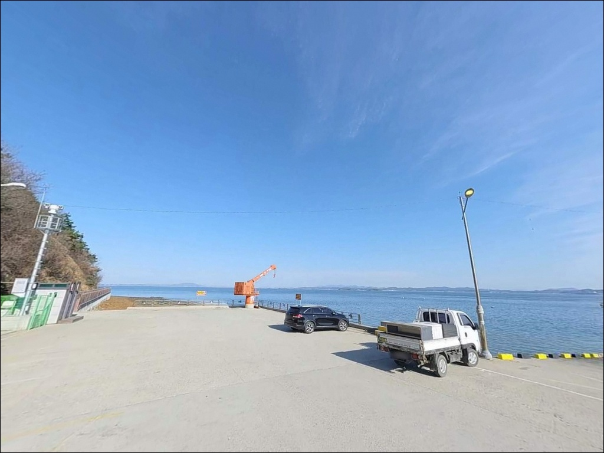
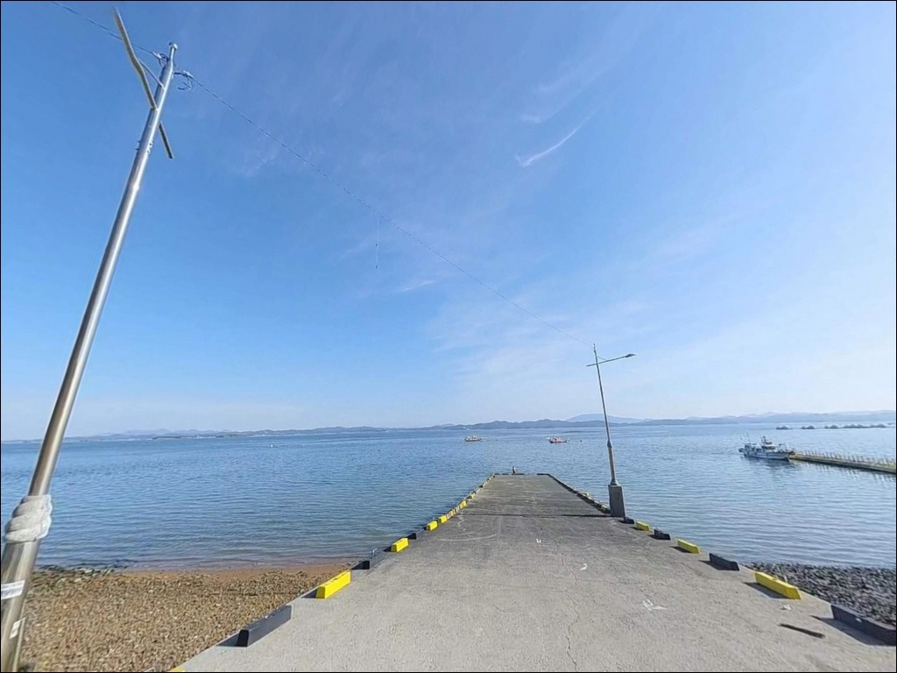
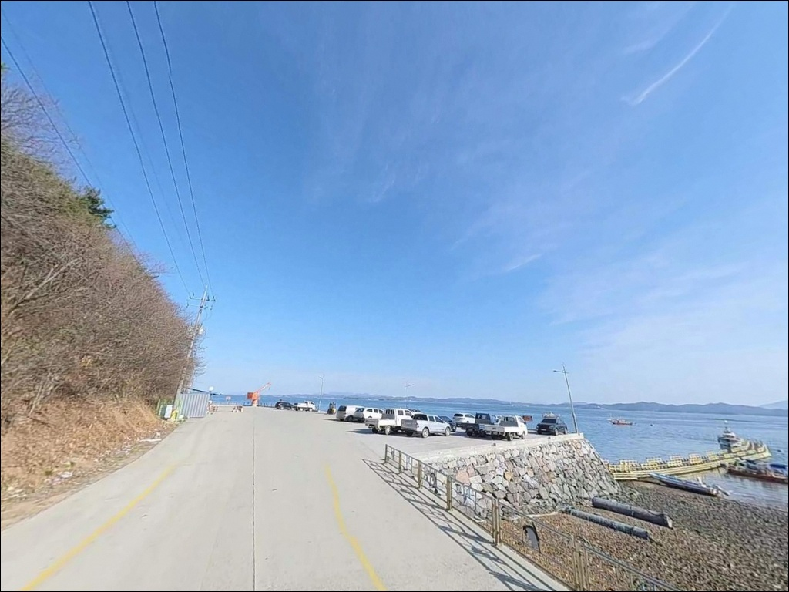

내포항, 충남 태안군 안면도 한적한 차박, 낚시 장소
이 페이지에는 광고(제휴 링크 포함)가 있으며, 광고 링크를 통해 구매하면 운영자가 판매 수익 또는 수수료를 받을 수 있습니다. 포인트 사진: 카카오맵 스카이뷰·로드뷰. 이 페이지의 지도·사진 이미지는 카카오맵의 실제 서비스 이미지와 다를 수 있습니다.


포인트 안내
내포항
충남 태안군 안면읍 중장리 318-53
선착장 앞에 앉아 육상 낚시만 계획하고 내포항을 찾으면
이 포인트가 제공하는 가치의 절반에도 닿지 못합니다.
내포항은 복수의 배낚시 선단이 실질적으로 출항하는 거점 항으로,
선상·좌대낚시를 활용할 때
이 포인트가 제 역할을 합니다.
나암도(라암도) 선착장으로도 불리는 이곳은
안면도 중장리 해안에 자리한 소형 어항입니다.
황금백호, 해맨호, 피싱게이트 등
복수의 선단이 주꾸미·갑오징어·우럭을 대상으로
연중 운항하고 있습니다.
선착장 육상 낚시도 병행 가능하지만,
배 없이 방문한다면 기대치를 조정하고
찾아가는 편이 현실적입니다.
이 글은 내포항의 진입 동선, 차박 여건,
편의시설 현황, 낚시 방식별 여건,
인근 대안 포인트를 중심으로 정리합니다.
조황 단정이나 특정 어종 보장은
이 글의 범위에 포함되지 않습니다.

1. 진입 동선과 주차 여건
내포항은 안면대로에서 분기하는 마을도로를 따라
해안 방향으로 진입하는 구조입니다.
항 입구까지 포장도로가 이어지며
일반 승용차 기준 접근 자체에 큰 문제는 없는 편이지만,
마을도로 특성상 도로 폭이 넉넉하지 않은 구간이
포함되어 있을 가능성이 있습니다.
항 내부는 선착장 슬로프와 접안 구역이
중심 구조를 이루고 있습니다.
낚시 업체와 선단 사무소가 항 주변에 자리 잡고 있어
낚시객 차량의 단기 주차는 이루어지고 있는 편으로 보이지만,
어선 접안 구역과 작업 동선을 피한 자리를
먼저 확인하고 차를 세워야 합니다.
대형 SUV나 캠핑 장비를 실은 차량이라면
출발 전 위성지도로 항 진입부 구조를
확인해두는 편이 좋습니다.
새벽 출항 시간대에는 선단 차량과 낚시객이
동시에 몰리는 경우가 있어
주차 공간이 생각보다 빠듯해질 수 있습니다.

2. 차박 환경과 야간 체류 여건
내포항에서의 하룻밤은 조용한 해안 차박보다
출조 전후 베이스캠프에 가까운 분위기입니다.
복수의 낚시 선단이 이른 새벽에 출항하는 항인 만큼,
야간부터 새벽 사이에 선단 관계자와
출조객의 차량 이동이 이어질 가능성이 있습니다.
항 주변에 낚시 업체와 해상낚시공원 시설이 인접해 있어
인공 조명이 어느 정도 있을 가능성이 있습니다.
민가 밀집도는 낮은 편으로 추정되지만,
실제 야간 소음과 조명 수준은
현장에서 확인해야 정확히 알 수 있습니다.
개인 조명 장비는 기본으로 챙겨 가야 합니다.


3. 주변 편의시설 및 인프라 현황
내포항 반경 1km 이내에서는
편의점이나 식당을 바로 기대하기 어렵습니다.
선단 사무소와 낚시 관련 업체가 항 주변에 있는 구조이므로,
식수·간식·낚시 소품은
출발 전 충분히 챙겨오는 편이 안전합니다.
방포항 방면으로 차로 10분 내외 이동하면
편의점과 슈퍼가 있는 것으로 확인됩니다.
낚시 소품이 부족하거나 식료품이 필요하다면
방포항 권역 동선을 활용하는 것이 효율적입니다.
북쪽으로 약 6~7km 거리에
주유소도 위치해 있어
연료는 내포항 진입 전에 채워두는 것이 좋습니다.

4. 내포항 방문 전 반드시 확인해야 할 조건
방문 전 가장 먼저 확인해야 할 것은 물때입니다.
서해안 특성상 조차가 크고
항 내 수심도 물때에 따라 변화가 큰 편입니다.
바다타임에서 중장리 기준 물때를 확인하고
만조 전후 타이밍을 기준으로
낚시 계획을 잡는 것이 기본입니다.
선상낚시를 계획하고 있다면
출발 전 선단 예약 여부를 반드시 확인합니다.
내포항 선단들은 예약제로 운영하는 경우가 많고,
기상 악화·풍랑주의보 발효 시에는
출항이 취소되는 기준이 있습니다.
기상청 예보를 출발 전날과 당일 아침 재확인하는 것이
헛걸음을 막는 가장 확실한 준비입니다.
서해안 선착장 끝단은 만조 시
고립 가능성이 있는 구간이 생길 수 있습니다.
야간 낚시 시 구명조끼와 헤드랜턴은 필수이며,
선착장 콘크리트와 테트라포드 구간의
미끄럼 위험도 항상 염두에 두어야 합니다.

5. 지형 기반 낚시 여건 분석
내포항은 나암도 인접 해역에 형성된 소형 선착장형 구조입니다.
항 내측은 선박 접안을 위한
비교적 일정한 수심 구간이 형성될 가능성이 있고,
외항 방향으로는 조류 영향을 받는
수심 있는 구간이 이어질 가능성이 있습니다.
선착장 주변 바닥은 모래·뻘·돌이 섞인 구조로 추정되며,
밑걸림이 발생하는 지점이 산재할 수 있습니다.
항 내측 선착장 앞은 잔잔한 수면이 형성될 가능성이 있어
찌낚시나 라이트 루어처럼
가벼운 채비를 운용하기 편한 여건으로 보입니다.
반면 외항 방향은 바람과 파도의 영향을
직접 받는 구조로 추정되므로,
기상 변화를 먼저 파악한 뒤 자리를 결정하는 것이 좋습니다.
나암도와 인접한 해역은 간출암이 분포하는 조간대 지역입니다.
물이 빠지면 드러나는 바위 지형이 있어
채비 손실이 잦을 수 있으므로
여분 채비를 넉넉하게 챙기는 편이 좋습니다.
선착장 남단 구조물 주변은
루어로 탐색해볼 만한 구간으로 기대해볼 수 있습니다.
최신 조황은 가기 전에 꼭 검색해 보시기 바랍니다.


6. 주꾸미·갑오징어 시즌에 내포항 낚시 스타일이 달라지는 조건
내포항에서 가장 활발한 출조가 이루어지는 시기는
가을 주꾸미·갑오징어 시즌입니다.
이 시기에는 에깅 스타일의 선상낚시 출조가 집중되며,
복수의 선단이 오전·오후·종일 코스로 운항합니다.
수심이 확보되는 외항 구간에서
에기를 바닥층 가까이 운용하는 방식이
이 지형 조건과 어울립니다.
선착장 육상 낚시를 선택한다면
원투낚시가 가장 현실적인 방식입니다.
야간에는 붕장어를 노리는 원투가 맞는 편이며,
낮 시간에는 망둥어와 도다리 방향으로
접근해볼 수 있습니다.
선착장 구조물 주변을 라이트 루어로 탐색하면
우럭·노래미를 기대해볼 수 있는 구간이
있을 가능성이 있습니다.
찌낚시는 내항과 외항 경계면을 노리는 방식이 맞습니다.
학꽁치나 숭어가 드나드는 시즌에는
잔잔한 내항 쪽 수면을
민장대나 릴찌낚시로 공략해볼 수 있습니다.
봄에는 노래미·우럭, 겨울에는 붕장어·우럭이
이 권역에서 연중 기대해볼 수 있는 어종으로
알려져 있습니다.

7. 출조 조건이 맞지 않을 때의 대안 포인트
내포항 선단 출항이 기상으로 취소되거나
주차 여건이 여의치 않을 때
가장 먼저 이동할 대안은
방포항 방파제입니다.
차로 10분 내외 거리이며,
방파제 규모와 진입·주차 여건이
내포항보다 안정적인 편으로 알려져 있습니다.
방포항은 해맨호를 포함한 일부 선단이
내포항과 병행 출항지로 사용하는 항이기도 합니다.
방파제 낚시에서 꽃지해수욕장 북측 갯바위까지
동선을 연계할 수 있어,
하루 동선으로 두 포인트를 묶어 운용하기 좋습니다.
편의점과 식당 접근성도 방포항 쪽이 더 나은 편입니다.
나암도 선착장은 내포항에서 북쪽으로 1km 내외에 있으며
유사한 지형의 소형 선착장 포인트입니다.
더 남쪽으로 이동하면 영목항·구매항 방면에서
선상 출조 선택지가 넓어지는 편입니다.
차박 거점으로는 방포항 인근 공영주차장 또는
꽃지해수욕장 주변이 편의시설 면에서
내포항보다 여건이 갖춰진 편입니다.

선상 출조 거점으로 활용할 때
내포항의 가치가 살아납니다
배낚시나 좌대낚시를 계획한 낚시인이라면
내포항은 출발 거점으로서 실용적인 선택입니다.
다수의 선단이 실제로 이 항에서 출항하고 있고,
가을 주꾸미·갑오징어 시즌에는
출조 밀도가 높아지는 편입니다.
육상 낚시만을 목적으로 한다면
방포항 방파제가 구조적으로 더 잘 맞을 수 있습니다.
물때 확인과 선단 예약, 기상 체크.
이 세 가지가 내포항에서 헛걸음을 막는 기본 조건입니다.
차박은 조용한 해안 숙박보다
출조 전날 밤 베이스캠프 용도에
더 잘 맞는 성격의 포인트입니다.
물때와 기상, 선단 예약이 맞아떨어지는 날이라면
내포항에서 배에 올라타는 것 하나로도
안면도 바다를 충분히 즐길 수 있는 하루가 됩니다.